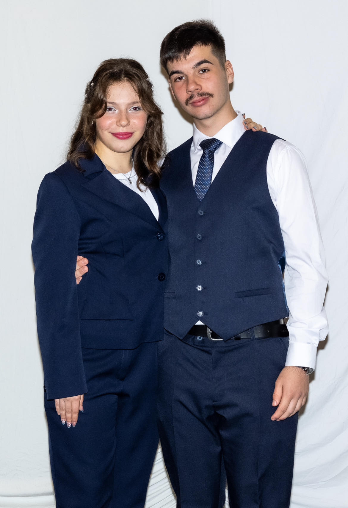
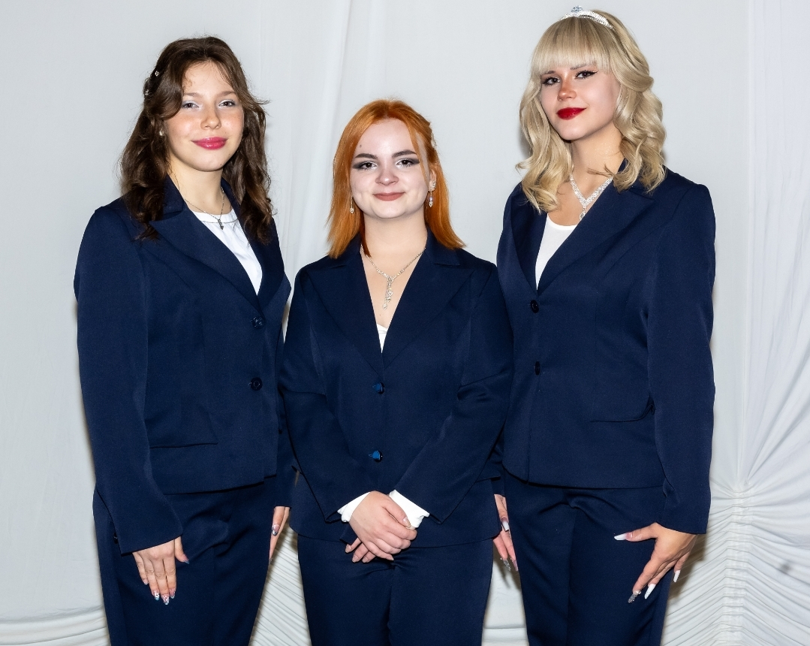
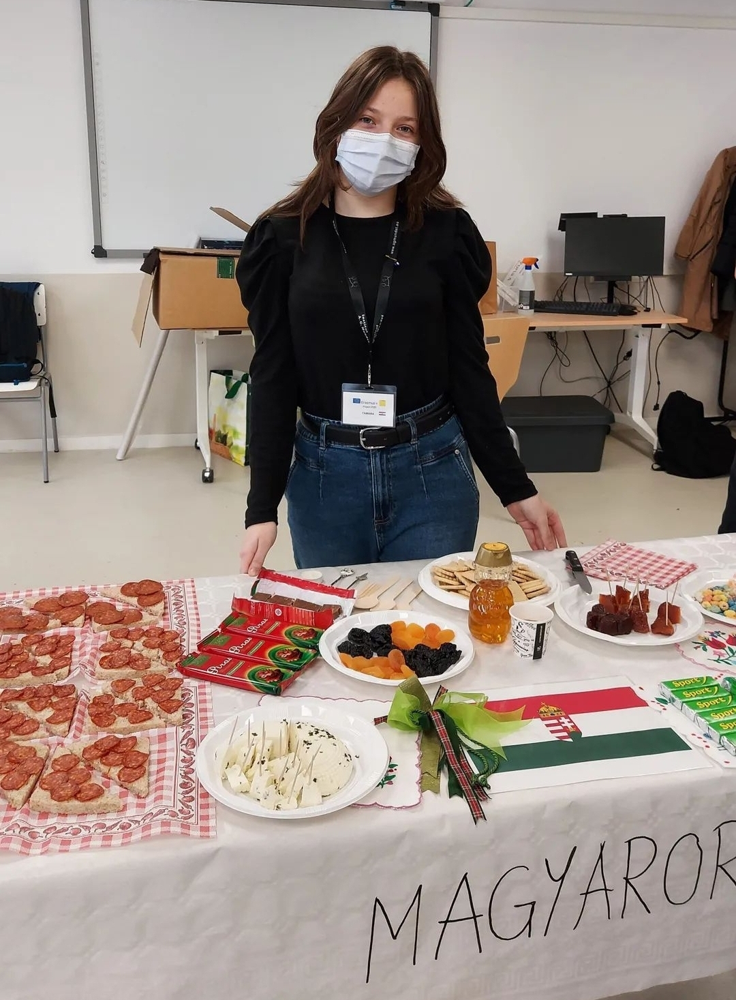
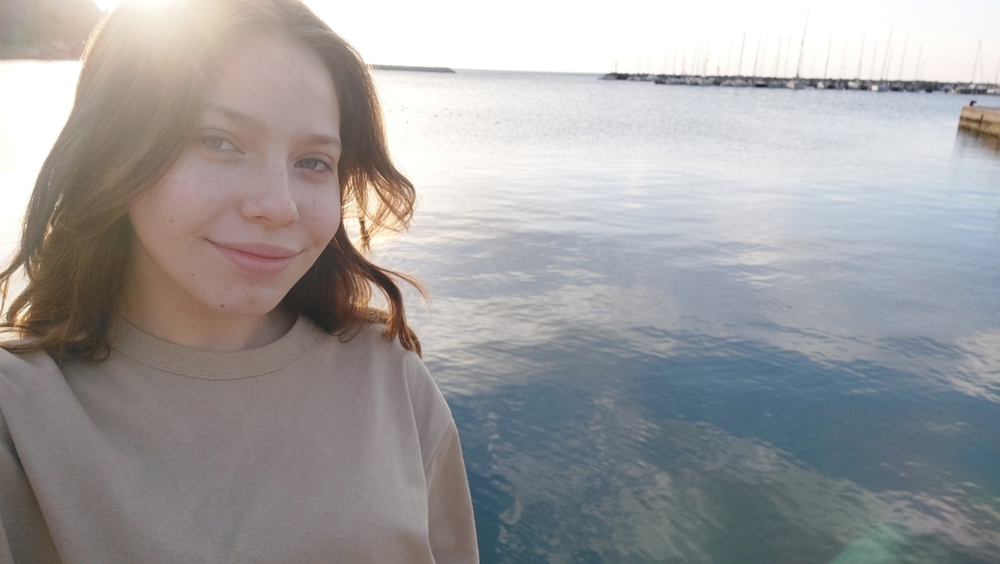
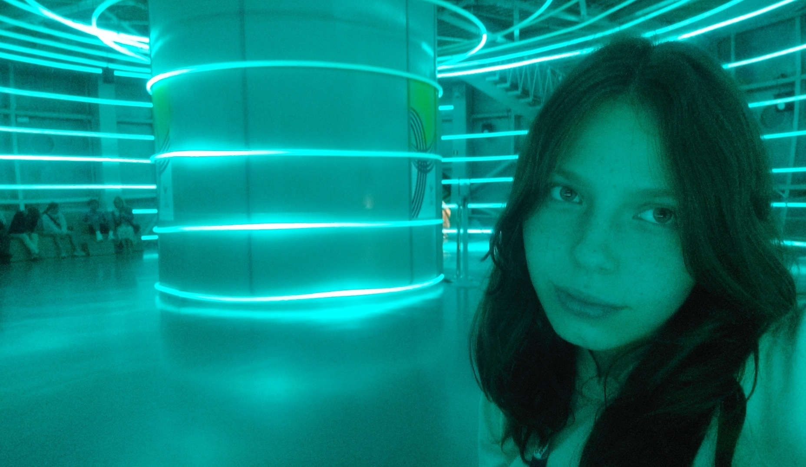
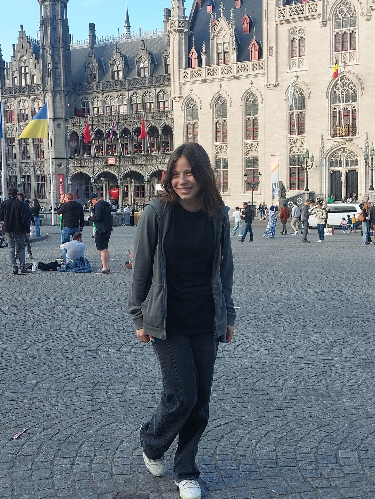

Rólam
A nevem Boruzs Tamara, 18 éves vagyok.
Debrecenben születtem, de egész életemet Szeghalmon egy Békés vármegyei kisvárosban töltöttem.
Ide jártam általános- és középiskolába, ahonnan nagyon sok szép emlékem származik. Tökéletes hely volt életre szóló barátságok és kapcsolatok kialakítására.
 
Jelenleg elsőéves hallgató vagyok a Budapesti Műszaki és Gazdaságtudományi Egyetem Gépészmérnöki karán. Azért választottam ezt az irányt, hiszen a természettudományok közel állnak a szívemhez, legfőképpen a matematika és a fizika.
Gyerekkorom óta járok tanulmányi versenyekre, több tantárgyból is. Legutóbb 2024. márciusban vettem részt a Békés Megyei Angol Nyelvi Retorika Versenyen, emelt szinten, ahol 2. helyezést értem el. A prezentációm, melynek címe "When will AI exceed human performance?", a mesterséges intelligencia jövőjéről szólt.
A középiskolám lehetőséget adott, hogy Erasmus projektek keretében többször is kiutazhassak más országokba. 2022-ben Spanyolországban (Barcelona), 2023-ban Olaszországban (Bologna, Firenze) és Romániában (Ivó) tölthettem számos napot ennek köszönhetően. Itt a nyelvi kompetenciám fejlesztése mellett, több nemzetközi barátra is leltem, akikkel mai napig kapcsolatban állok.
 
Szabadidőmben szeretek barátokkal lenni, rajzolni, kirándulni. Számos tudomány foglalkoztat, érdeklődök a művészet és az irodalom iránt is.
A zene és a tánc is nagy szerepet játszik az életemben. 13 évet mazsoretteztem a Szeghalmi Mazsorett Együttes csoportjában, akikkel rengeteg szép eredményt, elismerést és élményeket nyertünk.
Részt vettünk nemzetközi fesztiválokon, köztük Olaszországban és ebben az évben Bulgáriában is. 2023-ban a csapatunk D-, legmagasabb fokozaton minősült.
Számos célom van, amiket el szeretnék érni az életben. Mindig is látni szerettem volna a természeti csodákat a Föld körül, körbeutazni a világot. Eddig 9 országban jártam, ebből a legutóbbi Belgium, ahova jó tanulmányi eredményemért kaptam a kiutazási lehetőséget a városom önkormányzatától.
 
A célok mellett az életben fő motivációm az, hogy minden nap új dolgot tanulhatok. Én úgy gondolom, az egyik legfontosabb érték a tudás.
Tanulmányok
2012 - 2018: Tildy Zoltán Általános Iskola és Alapfokú Művészeti Iskola
2018 - 2024: Péter András Gimnázium és Kollégium
2024 - : Budapesti Műszaki és Gazdaságtudományi Egyetem
Készségeim
-
🌸Együttműködés
🌸Kommunikáció
🌸Nyelvtudás
🌸Előadókészség
🌸Problémamegoldás
🌸Kreatív gondolkodás
Kapcsolat
Elérhet engem az alábbi elérhetőségek valamelyikén:
Email: tamara.boruzs@gmail.com
Facebook: Tamara Boruzs
Telefon: +36 20 432 4347